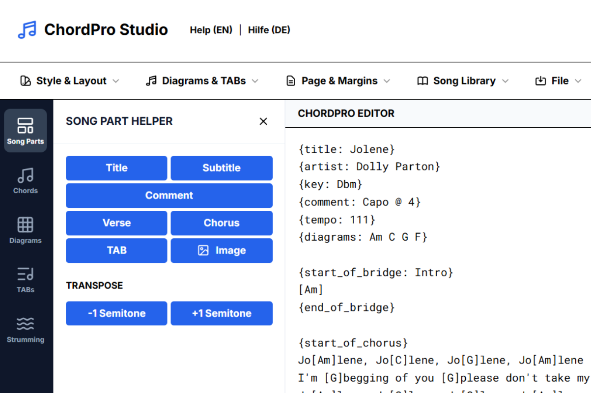

Create, style, and export professional songsheets with ease. Built-in tools for ABC notation, custom chord diagrams, strumming patterns, and high-quality TABs.

Professional tools designed for guitarists, bassists, and songwriters who demand quality and precision.
Standard ChordPro format with real-time preview, keyboard shortcuts, and intelligent chord insertion.
Full control over typography, colors, spacing, and layout. Create songsheets that match your personal style.
Full support for ABC notation. Render high-quality sheet music directly within your songsheets with granular spacing control.
Export to high-quality PDF with optimized page breaks. Perfect for printing or digital tablets with single or two-column layouts.
Create professional 4-8 string tablature with high-quality SVG/PNG export and proportional scaling.
Open TAB CreatorDefine custom chords with an interactive fretboard grid and barre support.
Open Diagram CreatorVisualize complex rhythms with a dedicated pattern editor and BPM controls.
Open Pattern EditorTranspose your ABC notation step-by-step with real-time preview and clipboard support. Handles key signatures and accidentals intelligently.
Open ABC TransposerJoin thousands of musicians who use ChordPro Studio to organize their music professionally.
Launch ChordPro Studio